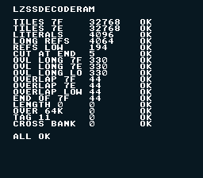

|
OpenSNES
Modern Open-Source SNES Development SDK
|
|
OpenSNES
Modern Open-Source SNES Development SDK
|

How to decompress LZ77 data into work RAM while the game runs. lzssDecodeVram writes straight into VRAM, so it needs forced blank; lzssDecodeRam writes into RAM of any bank instead, touches no PPU register and leaves the NMI enabled. A game decompresses the next tiles with the screen on, then sends them to VRAM by DMA in VBlank (dmaCopyVram, or the VRAM queue).
The example decodes, screen on, a 2 bpp tile block compressed by opensnes-sprite (32768 bytes from 17856) into bank $7F and into a FAR buffer of bank $7E, and compares each copy byte for byte with the same tiles converted without compression. Hand-built streams (streams.asm) then cover what the compressor never writes: overlapping references, a reference cut at the end of the output, an output that ends exactly at the end of bank $7F, and the four streams that must be refused. One line per test on screen: name, bytes returned, OK or BAD.
The tests run with the screen on and take about five seconds (most of it is the C code that fills and compares 32 KB buffers, not the decoder); the lines appear when they are done.
The return value is the number of bytes written. It is 0, and nothing is written, when the stream's tag is not 0x10, its length is 0 or above 65535, or the output would run past the end of the destination bank.
| Test | Stream | Destination | What it proves |
|---|---|---|---|
| TILES 7F / 7E | tiles from opensnes-sprite --lz | $7F:0000, FAR buffer | the real data, both MVN paths |
| LITERALS | 4096 literals | $7F:9000 | the eight-literal fast path |
| LONG REFS | 32 literals + 224 references of 18 bytes | FAR buffer | MVN on long copies |
| REFS LOW | the same, 194 bytes | a plain buffer (bank $00) | the byte-loop copy of other banks |
| CUT AT END | 'A' + 18 x 'A' in a 5-byte stream | $7F:C000 | a reference past the end is cut |
| OVL LONG | distance 1, 2 and 3, 330 bytes | $7F, $7E, bank $00 | overlap through MVN |
| OVERLAP | distance 1, 2 and 3, 44 bytes | $7F, $7E, bank $00 | overlap in the last 144 bytes |
| END OF 7F | 44 bytes ending at $7F:FFFF | $7F:FFD4 | the end address wraps to $0000 |
| LENGTH 0, OVER 64K, TAG 11, CROSS BANK | refused streams | 0 returned, the destination untouched |
Each test also checks the 16 bytes after its output: the decoder never writes past the end. The luna manifest testing/manifests/memory_lzss_ram.toml asserts every result.
Master cycles per output byte, measured with luna profile on this ROM (each decode run alone, selected by poking bench_sel):
| Stream | SlowROM (this build) | FastROM (USE_FASTROM := 1) |
|---|---|---|
| literals only (4096 bytes) | 104 | 88 |
| long references (4064 bytes) | 101 | 87 |
| 2 bpp tiles, 17856 → 32768 bytes | 163 | 139 |
(bench_sel = 1 literals, 2 long references, 3 tiles; add the rows whose symbol starts with lzssDecodeRam.) For comparison, lzssDecodeVram measured the same way on the 4 bpp tiles of backgrounds/mode1 (28256 bytes): 709 master cycles per byte. 32 KB of tiles take about 5.4 million master cycles, 15 frames: spread over frames, a game decompresses a few KB per frame beside its own work. The ROM cost is 376 bytes, for a ROM that calls lzssDecodeRam; a ROM that only calls lzssDecodeVram does not link it.
console, dma, text, background, sprite, lzss